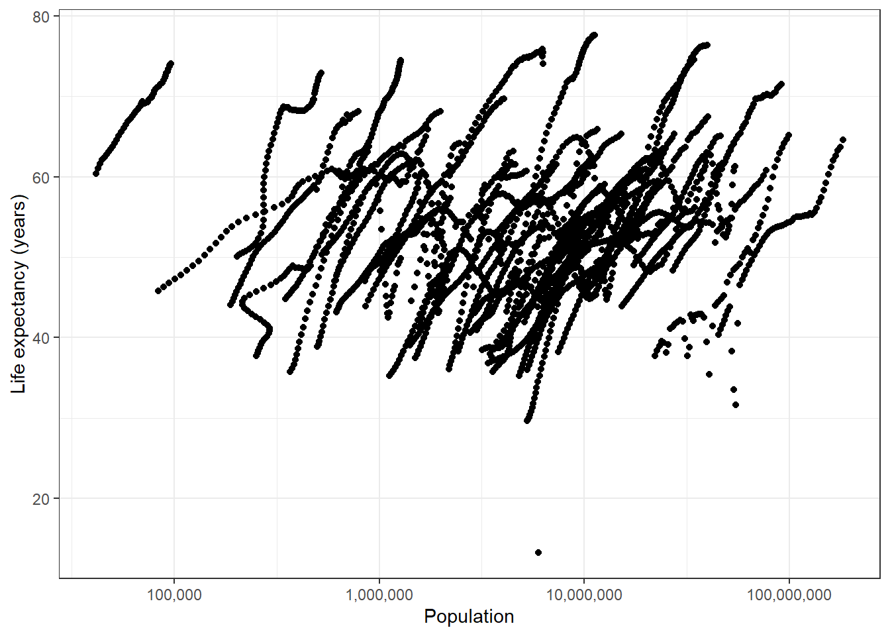

Zane’s R Coding Exercise
For this exercise, I want to work on the gapminder data from the dslabs package. First, I want to get an idea of what this dataset looks like.
# The dslabs package is where the data we want to use lives.
library(dslabs)
# We also need the tidyverse package for analysis later.
library(tidyverse)
# Use the scales package to make plot labels nicer
library(scales)
# Use the brooms package to help move data into easier format for tables
library(broom)
#Allows for easy to create tables from statistical data
library(gtsummary)
# For linear model diagnostic plots
library(ggfortify)
# Examine the structure of the gapminder data
str(gapminder)## 'data.frame': 10545 obs. of 9 variables:
## $ country : Factor w/ 185 levels "Albania","Algeria",..: 1 2 3 4 5 6 7 8 9 10 ...
## $ year : int 1960 1960 1960 1960 1960 1960 1960 1960 1960 1960 ...
## $ infant_mortality: num 115.4 148.2 208 NA 59.9 ...
## $ life_expectancy : num 62.9 47.5 36 63 65.4 ...
## $ fertility : num 6.19 7.65 7.32 4.43 3.11 4.55 4.82 3.45 2.7 5.57 ...
## $ population : num 1636054 11124892 5270844 54681 20619075 ...
## $ gdp : num NA 1.38e+10 NA NA 1.08e+11 ...
## $ continent : Factor w/ 5 levels "Africa","Americas",..: 4 1 1 2 2 3 2 5 4 3 ...
## $ region : Factor w/ 22 levels "Australia and New Zealand",..: 19 11 10 2 15 21 2 1 22 21 ...# Get a summary of the gapminder data variables
summary(gapminder)## country year infant_mortality life_expectancy fertility population gdp
## Albania : 57 Min. :1960 Min. : 1.50 Min. :13.20 Min. :0.840 Min. :3.124e+04 Min. :4.040e+07
## Algeria : 57 1st Qu.:1974 1st Qu.: 16.00 1st Qu.:57.50 1st Qu.:2.200 1st Qu.:1.333e+06 1st Qu.:1.846e+09
## Angola : 57 Median :1988 Median : 41.50 Median :67.54 Median :3.750 Median :5.009e+06 Median :7.794e+09
## Antigua and Barbuda: 57 Mean :1988 Mean : 55.31 Mean :64.81 Mean :4.084 Mean :2.701e+07 Mean :1.480e+11
## Argentina : 57 3rd Qu.:2002 3rd Qu.: 85.10 3rd Qu.:73.00 3rd Qu.:6.000 3rd Qu.:1.523e+07 3rd Qu.:5.540e+10
## Armenia : 57 Max. :2016 Max. :276.90 Max. :83.90 Max. :9.220 Max. :1.376e+09 Max. :1.174e+13
## (Other) :10203 NA's :1453 NA's :187 NA's :185 NA's :2972
## continent region
## Africa :2907 Western Asia :1026
## Americas:2052 Eastern Africa : 912
## Asia :2679 Western Africa : 912
## Europe :2223 Caribbean : 741
## Oceania : 684 South America : 684
## Southern Europe: 684
## (Other) :5586# Print the class of the gapminder object
class(gapminder)## [1] "data.frame"For this exercise, I am only interested in the data from countries in Africa.
# Filter out records where the continent is "Africa"
africadata <- gapminder %>%
dplyr::filter(continent == "Africa")
# View structure and summary of the Africa-only data to see what changed.
str(africadata)## 'data.frame': 2907 obs. of 9 variables:
## $ country : Factor w/ 185 levels "Albania","Algeria",..: 2 3 18 22 26 27 29 31 32 33 ...
## $ year : int 1960 1960 1960 1960 1960 1960 1960 1960 1960 1960 ...
## $ infant_mortality: num 148 208 187 116 161 ...
## $ life_expectancy : num 47.5 36 38.3 50.3 35.2 ...
## $ fertility : num 7.65 7.32 6.28 6.62 6.29 6.95 5.65 6.89 5.84 6.25 ...
## $ population : num 11124892 5270844 2431620 524029 4829291 ...
## $ gdp : num 1.38e+10 NA 6.22e+08 1.24e+08 5.97e+08 ...
## $ continent : Factor w/ 5 levels "Africa","Americas",..: 1 1 1 1 1 1 1 1 1 1 ...
## $ region : Factor w/ 22 levels "Australia and New Zealand",..: 11 10 20 17 20 5 10 20 10 10 ...summary(africadata)## country year infant_mortality life_expectancy fertility population gdp
## Algeria : 57 Min. :1960 Min. : 11.40 Min. :13.20 Min. :1.500 Min. : 41538 Min. :4.659e+07
## Angola : 57 1st Qu.:1974 1st Qu.: 62.20 1st Qu.:48.23 1st Qu.:5.160 1st Qu.: 1605232 1st Qu.:8.373e+08
## Benin : 57 Median :1988 Median : 93.40 Median :53.98 Median :6.160 Median : 5570982 Median :2.448e+09
## Botswana : 57 Mean :1988 Mean : 95.12 Mean :54.38 Mean :5.851 Mean : 12235961 Mean :9.346e+09
## Burkina Faso: 57 3rd Qu.:2002 3rd Qu.:124.70 3rd Qu.:60.10 3rd Qu.:6.860 3rd Qu.: 13888152 3rd Qu.:6.552e+09
## Burundi : 57 Max. :2016 Max. :237.40 Max. :77.60 Max. :8.450 Max. :182201962 Max. :1.935e+11
## (Other) :2565 NA's :226 NA's :51 NA's :51 NA's :637
## continent region
## Africa :2907 Eastern Africa :912
## Americas: 0 Western Africa :912
## Asia : 0 Middle Africa :456
## Europe : 0 Northern Africa :342
## Oceania : 0 Southern Africa :285
## Australia and New Zealand: 0
## (Other) : 0The two relationships I am interested in are: * infant mortality and life expectancy, and * population and life expectancy.
# Create a data frame with only infant mortality and life expectancy
africa_im_le <- africadata %>%
dplyr::select(infant_mortality, life_expectancy)
str(africa_im_le)## 'data.frame': 2907 obs. of 2 variables:
## $ infant_mortality: num 148 208 187 116 161 ...
## $ life_expectancy : num 47.5 36 38.3 50.3 35.2 ...summary(africa_im_le)## infant_mortality life_expectancy
## Min. : 11.40 Min. :13.20
## 1st Qu.: 62.20 1st Qu.:48.23
## Median : 93.40 Median :53.98
## Mean : 95.12 Mean :54.38
## 3rd Qu.:124.70 3rd Qu.:60.10
## Max. :237.40 Max. :77.60
## NA's :226# Create a data frame with only population size and life expectancy
africa_ps_le <- africadata %>%
dplyr::select(population, life_expectancy)
str(africa_ps_le)## 'data.frame': 2907 obs. of 2 variables:
## $ population : num 11124892 5270844 2431620 524029 4829291 ...
## $ life_expectancy: num 47.5 36 38.3 50.3 35.2 ...summary(africa_ps_le)## population life_expectancy
## Min. : 41538 Min. :13.20
## 1st Qu.: 1605232 1st Qu.:48.23
## Median : 5570982 Median :53.98
## Mean : 12235961 Mean :54.38
## 3rd Qu.: 13888152 3rd Qu.:60.10
## Max. :182201962 Max. :77.60
## NA's :51Next I will visualize these two relationships.
# scatterplot of life expectancy vs infant mortality
africa_im_le %>%
# define which fields to plot
ggplot(aes(x = infant_mortality, y = life_expectancy)) +
# make the plot a scatterplot
geom_point() +
# change the way the plot looks (i.e. changing "non-data ink")
theme_bw() +
# make the axis titles nicer
labs(
x = "Infant mortality (deaths per 1000)",
y = "Life expectancy (years)"
)## Warning: Removed 226 rows containing missing values (geom_point).
# scatterplot of life expectancy vs population size
africa_ps_le %>%
# define which fields to plot
ggplot(aes(x = population, y = life_expectancy)) +
# make the plot a scatterplot
geom_point() +
# change the way the plot looks
theme_bw() +
# Make the axis titles nicer
labs(
x = "Population",
y = "Life expectancy (years)"
) +
# customize the x-axis scale
scale_x_continuous(
# use a log scale for population size
trans = "log10",
# format the values with commas rather than scientific notation
labels = scales::comma
)## Warning: Removed 51 rows containing missing values (geom_point).
Uh-oh! We can see that due to the inclusion of multiple years for each country, there is clearly autocorrelation and this makes the graphs look quite weird. We also got an error about missing data, with more data points missing for life expectancy.
Now I only want to plot one year at a time, so I will combine this with the missing data. First, I can find which years have missing data, and then I can choose a year to plot which does not have (or has the least amount of) missing values.
africadata %>%
# Filter for any rows where either variable is NA (missing)
dplyr::filter(is.na(infant_mortality) | is.na(life_expectancy)) %>%
# Count up the number of missing records for each year
dplyr::count(year, sort = TRUE, name = "# records missing")## year # records missing
## 1 2016 51
## 2 1961 17
## 3 1962 16
## 4 1963 16
## 5 1964 15
## 6 1965 14
## 7 1966 13
## 8 1967 11
## 9 1968 11
## 10 1960 10
## 11 1969 7
## 12 1971 6
## 13 1972 6
## 14 1973 6
## 15 1970 5
## 16 1974 5
## 17 1975 5
## 18 1976 3
## 19 1977 3
## 20 1978 2
## 21 1979 2
## 22 1980 1
## 23 1981 1It appears that for either of these two fields, there are missing records in 2016, and for years from 1961 through 1981. I will use the year 2000 for the next plot.
# Filter only records where the year is 2000
africadata_2000 <- africadata %>%
filter(year == 2000)
# Check to see if everything worked alright
str(africadata_2000)## 'data.frame': 51 obs. of 9 variables:
## $ country : Factor w/ 185 levels "Albania","Algeria",..: 2 3 18 22 26 27 29 31 32 33 ...
## $ year : int 2000 2000 2000 2000 2000 2000 2000 2000 2000 2000 ...
## $ infant_mortality: num 33.9 128.3 89.3 52.4 96.2 ...
## $ life_expectancy : num 73.3 52.3 57.2 47.6 52.6 46.7 54.3 68.4 45.3 51.5 ...
## $ fertility : num 2.51 6.84 5.98 3.41 6.59 7.06 5.62 3.7 5.45 7.35 ...
## $ population : num 31183658 15058638 6949366 1736579 11607944 ...
## $ gdp : num 5.48e+10 9.13e+09 2.25e+09 5.63e+09 2.61e+09 ...
## $ continent : Factor w/ 5 levels "Africa","Americas",..: 1 1 1 1 1 1 1 1 1 1 ...
## $ region : Factor w/ 22 levels "Australia and New Zealand",..: 11 10 20 17 20 5 10 20 10 10 ...summary(africadata_2000)## country year infant_mortality life_expectancy fertility population gdp continent
## Algeria : 1 Min. :2000 Min. : 12.30 Min. :37.60 Min. :1.990 Min. : 81154 Min. :2.019e+08 Africa :51
## Angola : 1 1st Qu.:2000 1st Qu.: 60.80 1st Qu.:51.75 1st Qu.:4.150 1st Qu.: 2304687 1st Qu.:1.274e+09 Americas: 0
## Benin : 1 Median :2000 Median : 80.30 Median :54.30 Median :5.550 Median : 8799165 Median :3.238e+09 Asia : 0
## Botswana : 1 Mean :2000 Mean : 78.93 Mean :56.36 Mean :5.156 Mean : 15659800 Mean :1.155e+10 Europe : 0
## Burkina Faso: 1 3rd Qu.:2000 3rd Qu.:103.30 3rd Qu.:60.00 3rd Qu.:5.960 3rd Qu.: 17391242 3rd Qu.:8.654e+09 Oceania : 0
## Burundi : 1 Max. :2000 Max. :143.30 Max. :75.00 Max. :7.730 Max. :122876723 Max. :1.329e+11
## (Other) :45
## region
## Eastern Africa :16
## Western Africa :16
## Middle Africa : 8
## Northern Africa : 6
## Southern Africa : 5
## Australia and New Zealand: 0
## (Other) : 0Now I can remake the plots using only the data from the year 2000, solving both plotting problems at the same time.
# scatterplot of life expectancy vs infant mortality
africadata_2000 %>%
# define which fields to plot
ggplot(aes(x = infant_mortality, y = life_expectancy)) +
# make the plot a scatterplot
geom_point() +
# change the way the plot looks (i.e. changing "non-data ink")
theme_bw() +
# make the axis titles nicer
labs(
x = "Infant mortality (deaths per 1000)",
y = "Life expectancy (years)"
)
# scatterplot of life expectancy vs population size
africadata_2000 %>%
# define which fields to plot
ggplot(aes(x = population, y = life_expectancy)) +
# make the plot a scatterplot
geom_point() +
# change the way the plot looks
theme_bw() +
# Make the axis titles nicer
labs(
x = "Population",
y = "Life expectancy (years)"
) +
# customize the x-axis scale
scale_x_continuous(
# use a log scale for population size
trans = "log10",
# format the values with commas rather than scientific notation
labels = scales::comma
)
Now we have a good idea what the relationships look like: I expect a negative linear relationship between life expectancy and infant mortality, and no relationship between life expectancy and population.
I will fit a simple linear model to test both of these predictions.
# Fit both of the simple linear models
fit1 <- lm(life_expectancy ~ infant_mortality, data = africadata_2000)
fit2 <- lm(life_expectancy ~ population, data = africadata_2000)
# Get information about both of the models
summary(fit1)##
## Call:
## lm(formula = life_expectancy ~ infant_mortality, data = africadata_2000)
##
## Residuals:
## Min 1Q Median 3Q Max
## -22.6651 -3.7087 0.9914 4.0408 8.6817
##
## Coefficients:
## Estimate Std. Error t value Pr(>|t|)
## (Intercept) 71.29331 2.42611 29.386 < 2e-16 ***
## infant_mortality -0.18916 0.02869 -6.594 2.83e-08 ***
## ---
## Signif. codes: 0 '***' 0.001 '**' 0.01 '*' 0.05 '.' 0.1 ' ' 1
##
## Residual standard error: 6.221 on 49 degrees of freedom
## Multiple R-squared: 0.4701, Adjusted R-squared: 0.4593
## F-statistic: 43.48 on 1 and 49 DF, p-value: 2.826e-08summary(fit2)##
## Call:
## lm(formula = life_expectancy ~ population, data = africadata_2000)
##
## Residuals:
## Min 1Q Median 3Q Max
## -18.429 -4.602 -2.568 3.800 18.802
##
## Coefficients:
## Estimate Std. Error t value Pr(>|t|)
## (Intercept) 5.593e+01 1.468e+00 38.097 <2e-16 ***
## population 2.756e-08 5.459e-08 0.505 0.616
## ---
## Signif. codes: 0 '***' 0.001 '**' 0.01 '*' 0.05 '.' 0.1 ' ' 1
##
## Residual standard error: 8.524 on 49 degrees of freedom
## Multiple R-squared: 0.005176, Adjusted R-squared: -0.01513
## F-statistic: 0.2549 on 1 and 49 DF, p-value: 0.6159From the first model (with infant mortality as the predictor), I obtain an estimated slope of about -0.19 (p < 0.001). Thus, I conclude that for African countries in the year 2000, an increase of 1 infant death out of every 1000 births was associated with a decrease of 0.19 years in life expectancy (about -2.28 months).
From the second model (with population size as the predictor), I obtained a very very small slope which rounds to 0 unless I use an unreasonable amount of precision. Since the p-value is also quite large (p = 0.6159), I think it is reasonable to conclude that there was no (linear) relationship between life expectancy and population size for African countries in the year 2000.
Part 2: Looking at life expectancy
As part of a group work assignment, I also contributed this code to my friend Savannah’s portfolio.
What I want to do in this section is fit a basic model to predict life expectancy by year.
EDA
The first thing I want to do here is make a spaghetti plot of how each country’s life expectancy changes over the years.
africadata |>
ggplot(aes(year, life_expectancy)) +
geom_line(aes(color = country), alpha = 0.5, show.legend = FALSE) +
geom_smooth(method = "gam", color = "black") +
xlab('Infant Mortality') +
ylab('Life Expectancy') +
theme_bw()## `geom_smooth()` using formula 'y ~ s(x, bs = "cs")'
Hmm, it looks like this relationship is not monotonic for several countries, and while there is a trend upwards overall, it is not necessarily linear. There is also a significant amount of variation in the trend, which is pretty normal for time series. There doesn’t appear to be any seasonal/cyclic change, at least on the annual scale of measurement for which we have data.
Let’s color by region and see if we see any similar trends that could explain part of the country-level effect.
africadata |>
ggplot(aes(year, life_expectancy)) +
geom_line(aes(color = country), show.legend = FALSE, alpha = 0.5) +
geom_smooth(method = "gam", color = "black") +
xlab('Infant Mortality') +
ylab('Life Expectancy') +
theme_bw() +
facet_wrap(vars(region))## `geom_smooth()` using formula 'y ~ s(x, bs = "cs")'
Let’s make a few more plots to see if we can observe any other relationships with life expectancy over time.
africadata |>
mutate(`log10 population` = log10(population), `log10 gdp` = log10(gdp),
.keep = "unused") |>
pivot_longer(c(infant_mortality, fertility, `log10 population`,
`log10 gdp`)) |>
ggplot(aes(year, value, color = life_expectancy, group = country)) +
geom_line(alpha = 0.7) +
scale_color_viridis_c(option = "plasma") +
theme_bw() +
coord_cartesian(expand = FALSE) +
facet_wrap(vars(name), scales = "free_y")## Warning: Removed 51 row(s) containing missing values (geom_path).I won’t try and make the argument that this is the best possible visualization for these data, but I think it is good enough to give us an idea of trends. Clearly, fertility and infant mortality vary with life expectancy across time. We can see this from how the curves trend over time, and how the pattern of colors shifts over time. However, while gdp and population size appear to vary with time, I do not think that they necessarily vary with life expectancy in the same way.
Now since this is time series data, I think we are kind of obligated to plot the autocorrelation, so let’s make a plot of the partial autocorrelation (as this controls for previous lags, unlike the regular autocorrelation, and is thus easier to interpret).
africadata %>%
select(country, year, life_expectancy) |>
tidyr::nest(data = -country) |>
dplyr::mutate(
pacf_res = purrr::map(data, ~pacf(.x$life_expectancy, plot = F, lag.max = 10)),
pacf_val = purrr::map(pacf_res, ~data.frame(lag = .x$lag, acf = .x$acf))
) |>
unnest(pacf_val) |>
ggplot(aes(x = lag, y = acf)) +
geom_hline(yintercept = c(qnorm(0.025) / sqrt(17), qnorm(0.975) / sqrt(17)),
lty = 2, color = "gray", size = 1.5) +
geom_hline(yintercept = 0, size = 1.5) +
geom_line(aes(group = country, color = country), show.legend = FALSE) +
theme_bw(base_size = 20) +
scale_x_continuous(labels = 1:10, breaks = 1:10, minor_breaks = NULL) +
labs(x = "lag", y = "partial autocorrelation") +
ggtitle("Partial autocorrelation of life expectancy by year for each African country")The dashed gray lines on this plot represent approximate normal 95% confidence bands. We see that all countries have a partial autocorrelation at the 1st lag which lies outside of the 95% confidence band, but at the 2nd lag, only one country has a value outside of the band. Since we are testing a larging amount of countries, I think we can safely say that this one second lag value is spurious. The interpretation of a significant first lag partial autocorrelation value (and no other significant partial autocorrelations) is that our time series can be modeled as an autoregressive process of order 1, AKA an AR(1) process.
Imputation
Most time series models have no way to deal with missing data. There are a lot of ways we could deal with this, and in this case we could likely find another data source to fill in the missing values with real information. But I am too lazy to do that. So first, let’s look at how much data is actually missing.
africadata |>
select(!continent) |>
summarize(across(everything(), ~mean(is.na(.x)))) |>
pivot_longer(everything(), names_to = "field", values_to = "pct_m") |>
ggplot(aes(x = pct_m, y = forcats::fct_reorder(field, pct_m))) +
geom_col() +
geom_label(aes(label = scales::percent(round(pct_m, 2))), size = 10) +
theme_bw(base_size = 20) +
labs(x = "percent of records missing", y = NULL) +
scale_x_continuous(labels = scales::percent_format())Well, the most missing values are in GDP, which did not appear to be a strong predictor anyways, so we can throw that one out. And then since infant mortality and fertility both have missingness less than 10%, for this simple example I think it will be fine to impute with the median, although in a real analysis something more complex might be better to reduce bias.
modeldata <- africadata |>
dplyr::select(-continent, -gdp, -population) |>
dplyr::mutate(
across(c(infant_mortality, fertility),
~dplyr::if_else(is.na(.x), median(.x, na.rm = TRUE), .x)
)
)Simple model fitting
Now that the imputation is done, let’s build a multivariable linear model. For this model we are going to ignore what we learned about the potentially autoregressive structure of the data :)
Now we have been looking at this by country previously, but I think that including 50+ regression parameters is maybe a bit excessive. So let’s group by region instead, which will give us a much more manageable number of regression coefficients. I don’t know which region of Africa we sould select as the reference group, so I will let R use the default (which in this case is Eastern Africa).
fit3 <- lm(life_expectancy ~ . - country, data = modeldata)
fit3 |>
tbl_regression() |>
add_glance_source_note(
label = list(df ~ "Degrees of Freedom", sigma ~ "\U03C3"),
fmt_fun = df ~ style_number,
include = c(r.squared, AIC, sigma, df)
)| Characteristic | Beta | 95% CI1 | p-value |
|---|---|---|---|
| year | 0.12 | 0.10, 0.13 | <0.001 |
| infant_mortality | -0.13 | -0.13, -0.12 | <0.001 |
| fertility | -0.32 | -0.49, -0.14 | <0.001 |
| region | |||
| Eastern Africa | — | — | |
| Middle Africa | -1.8 | -2.3, -1.3 | <0.001 |
| Northern Africa | 7.3 | 6.7, 7.9 | <0.001 |
| Southern Africa | -2.6 | -3.2, -1.9 | <0.001 |
| Western Africa | 0.69 | 0.25, 1.1 | 0.002 |
| R² = 0.745; AIC = 17,044; σ = 4.53; Degrees of Freedom = 7 | |||
|
1
CI = Confidence Interval
|
|||
We can see that all of the coefficients have low \(p\)-values, and the model has an \(R^2\) of 0.745 (that is, the linear model explains 74.5% of the variance in life expectancy), which is pretty good. Next we should at least glance at the diagnostics.
autoplot(fit3) + theme_bw()From the diagnostics, we can see minor deviations from normality and some evidence of non-constant variance in the residuals, but I think, similar to what we saw before, the plots indicate that the residuals are correlated, so we truly do need to correct for correlated residuals. This means that the standard errors (and thus reported confidence intervals) of the linear models we reported are not necessarily reliable under this model. Let’s plot the partial autocorrelations of the residuals for the model, this time using base R plotting for fun.
pacf(residuals(fit3))Yep, that is not ideal. There is definitely some residual autocorrelation of the residuals, though from this plot it is difficult to identify what the correlation structure is. So I think the next step would be adjusting for autocorrelation.
But I feel like this is long enough already, so I am just going to caution everyone about the weirdness that can show up with time series analysis and end this discussion here.